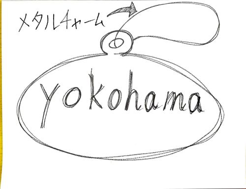
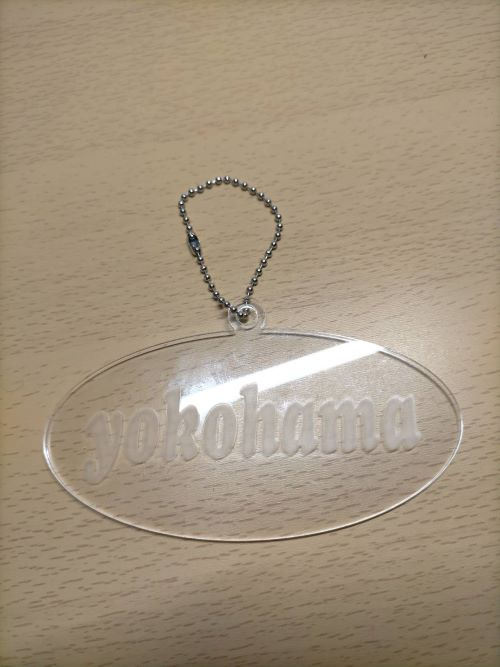

自分達が取り組むことにした問題の説明
私たちの班は「電車の中で音を出さずに動画を見ている人」をテーマに制作を進めていきました。
このような行動をとった理由として「駅を乗り過ごさないようにするため」というのが挙げられます。
このことからこの人に必要なものは、アナウンスが聞こえていなくても目的の駅で降りることができるものだと考えて制作を進めていきます。
制作スケッチ

使用するもの
①アクリル板(2mm) ②Trotec Speedy100 ③Adobe Ilustrator
制作したもの

まとめ
これを目立つところにつけて電車に乗れば横浜でおろしてくれると思います。
じっさいは今回のような観察課題がでていなければ電車内の人を観察しようとは考えないので視覚以外のアピール方法が求められると考えます。
班の人のリンク